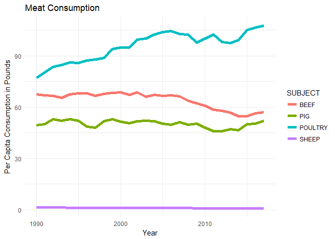
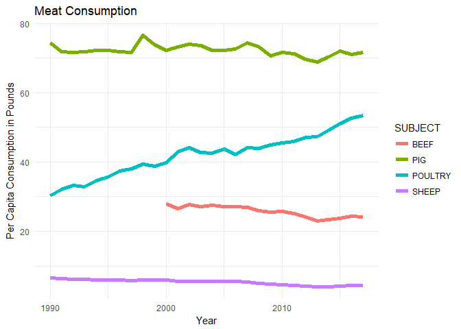
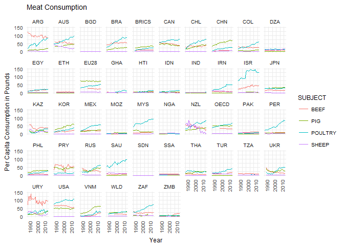
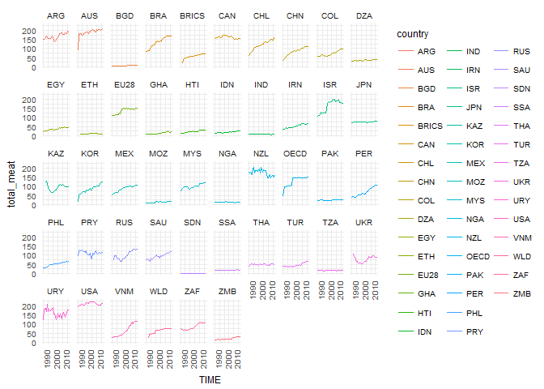
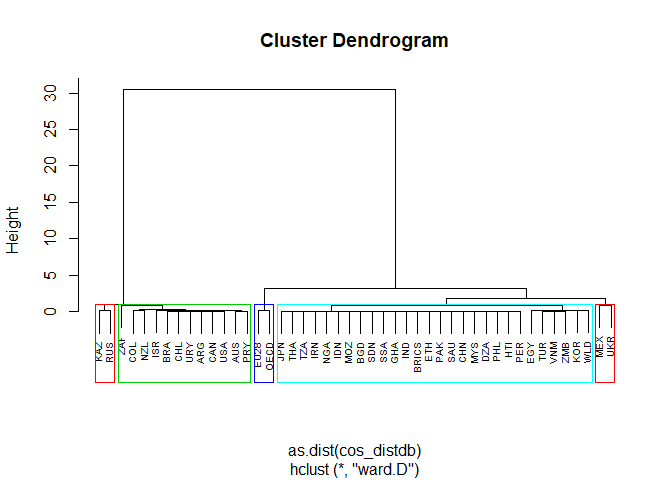
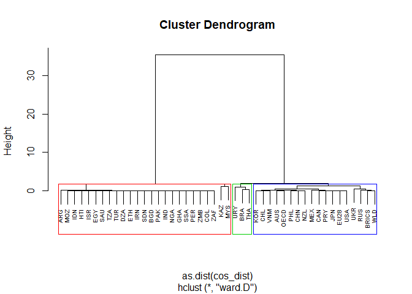
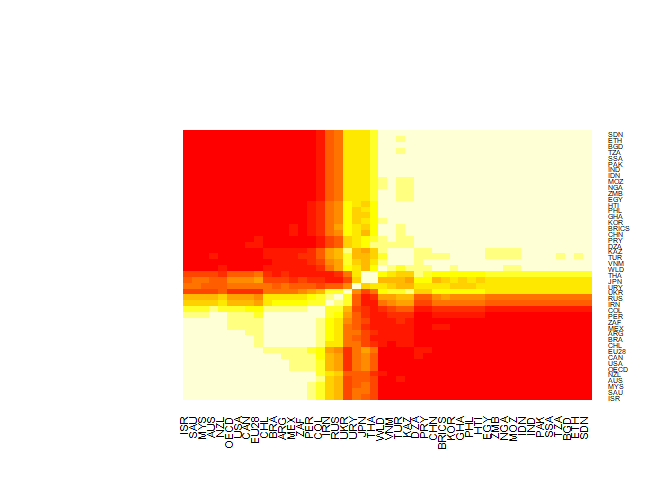
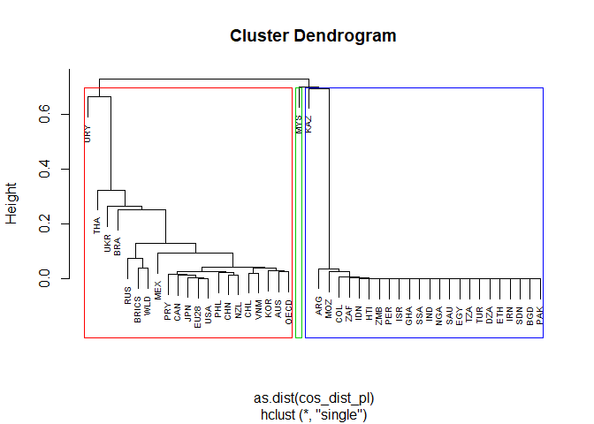
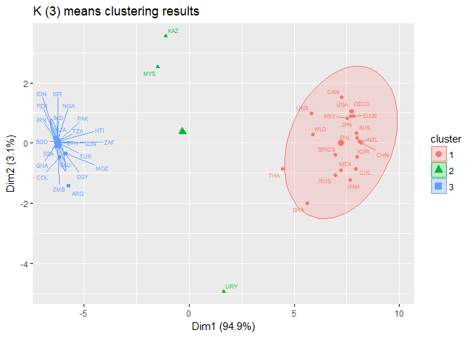

Data analysis: World Meat Consumption
About the data
From the OECD’s website: ‘This indicator is presented for beef and veal, pig, poultry, and sheep. Meat consumption is measured in thousand tonnes of carcass weight (except for poultry expressed as ready to cook weight) and in kilograms of retail weight per capita. Carcass weight to retail weight conversion factors are: 0.7 for beef and veal, 0.78 for pigmeat, and 0.88 for both sheep meat and poultry meat.’
So basically they did not measure what people actually put in their mouths, but instead measured the weight of dead animals slaughtered and then lopped off some of total weight to account for the fact only about 70-88% of slaughtered animals ends up being sold. I wonder what happens to the other 20%? Pet food? Cosmetics?
You can download the OECD meat consumption data here
Let’s load up the dataset and clean it up a little bit.
library(tidyverse)
df <- read.csv('meats.csv')
#delete flag codes
df <- df[,1:ncol(df)-1]
df_cap <- df %>%
filter(MEASURE == 'KG_CAP')
#rename
colnames(df_cap)[1] <- 'country'
#Let's round off the long decimals
df_cap <- df_cap %>%
mutate(value = round(Value,2),
Value = NULL)
#Remember that the OECD's report included forecasted numbers all the way until 2026
df_cap <- df_cap %>%
filter(TIME < 2018)
#convert kg into lbs capita (this is 'Murica)
df_cap <- df_cap %>%
mutate(value_lb = round(value*2.20462,2),
value = NULL)
America is notorious for its meat consumption. Does the evidence support that reputation?
df_cap %>%
filter(country == 'USA')%>%
ggplot(aes(TIME, value_lb, color=SUBJECT, group=SUBJECT))+
geom_line(size=2)+
labs(y='Per Capita Consumption in Pounds', x='Year',title='Meat Consumption')+
theme_minimal()

Let’s see how that compares with 28 EU countries’ meat consumption
EU
df_cap %>%
filter(country == 'EU28')%>%
ggplot(aes(TIME, value_lb, color=SUBJECT, group=SUBJECT))+
geom_line(size=2)+
labs(y='Per Capita Consumption in Pounds', x='Year',title='Meat Consumption')+
theme_minimal()

Europeans are surprisingly big pork fans. Didn’t expect that. Turns out they eat way more pork than Americans.
But in order to judge tell if these are large amounts, we really need to get a global perspective on consumption trends. Let’s do that. Notice there are also figures for BRIC (Brazil, Russia, India, China), and the OECD averages.
df_cap %>%
ggplot(aes(TIME, value_lb, color=SUBJECT, group=SUBJECT))+
geom_line(size=.7)+
labs(y='Per Capita Consumption in Pounds', x='Year',title='Meat Consumption')+
theme_minimal()+
theme(text = element_text(size=9),
axis.text.x = element_text(angle=90, hjust=1))+
facet_wrap(~country, nrow=5, ncol=10)

Overall, it looks like in almost every country there has been an increasing trend in meat consumption. Some countries have made big changes in their “meat o’ choice.” For example, Israel of course eats no pork and instead consumes more chicken that any other country listed (even the USA!). Interesting, the big beef producer Argentina has seen a reduction in beef consumption and that may be affecting Paraguay and Uruguay’s as well. If I had to invest into any meat farming (which I would never actually do, first because I of course don’t morally support this and second, I am poor as hell), I would put my money on poultry.
You can also see some interesting cultural differences. India eats almost no meat per capita. But Asian countries such as the Philippines, Korea, Vietnam and China are big fans of pork. No real surprise there, I suppose. Japan, however, seem to be a “equal opportunity” meat-eating country and the levels of consumption seem pretty equal among the different varieties of cooked animal carcasses.
But what about total meat consumption per capita (not including fish)? Let’s find out.
#First we need to redo the format of the data to make this work. Behold the genius of Hadley Wickham et al.
df_cap_time <- df_cap %>%
spread(TIME,value_lb)
#take care of those NAs
df_cap_time[is.na(df_cap_time)] <- 0
#reformat
df_cap_sp <- df_cap %>%
spread(SUBJECT,value_lb)
#Set NAs = 0
df_cap_sp[is.na(df_cap_sp)] <- 0
Let’s plot it now that we have reshaped the data.
df_cap_sp %>%
group_by(country, TIME)%>%
summarize(total_meat = sum(c(BEEF, POULTRY, SHEEP, PIG)))%>%
ggplot(aes(TIME, total_meat, color=country))+
geom_line()+
theme_minimal()+
theme(text = element_text(size=9),
axis.text.x = element_text(angle=90, hjust=1))+
facet_wrap(~country, nrow=5, ncol=10)

USA #1 baby!
Australia isn’t too far behind. Same with Argentina, New Zealand, and Israel (surprisingly… I expected more hummus?)
Wow the only country that has lower total meat consumption (not including fish) is New Zealand! I wonder what they’re doing over there? My guess is that fish consumption has increased while land animal consumption has decreased.
This article discusses the very same results we’ve found. It looks like Kiwis are shifting from agriculture and also worrying about the environmental impact of all that meat consumption.
NZ article discussing this shift in Kiwis’ eating habits
Japan surprisingly has stayed very stable, but for ALMOST ALL countries, meat consumption has increased tremendously in the past 20 years. This is not a good sign. Imagine the impact on the environment if China were to consume meat at US levels…
Let’s change gears a bit and see if we can use hiearchical clustering to group countries by their habits in meat-eating from 1990-2010.
Instead of a Euclidean distance metric, this time we will use a correlation (cosine distance, just 1 - cosine similarity) to visualize how changes over time in consumption are echoed in different countries.
In order to do that, we’ll need to choose one of the types of meat and then look at correlations in consumption over time. We’ll go through each type of meat in turn.
library(lsa)
Beef, it’s what’s for dinner in Argentina.
#Beef over time
df_beef <- df_cap_time %>%
filter(SUBJECT == 'BEEF')
#keep our rownames for identification
rownames(df_beef) <- df_beef[,1]
#keep numeric and scale for distance measures
df_beef <- df_beef %>%
select_if(is.numeric)%>%
scale()
#We have to transpose the matrix if we want to cluster countries, not years
db <- t(df_beef)
#once we have our scaled matrix we can run the cosine() function from lsa
cos_matdb <- as.data.frame(cosine(db))
#COSINE DISTANCE
cos_distdb <- 1 - cos_matdb
#here's what we have before we cluster
head(cos_distdb, 5)
## ARG AUS BGD BRA BRICS CAN
## ARG 0.00000000 0.07018542 1.98430175 0.02693160 1.99538485 0.01126153
## AUS 0.07018542 0.00000000 1.96010217 0.05945755 1.93671751 0.06972733
## BGD 1.98430175 1.96010217 0.00000000 1.99292465 0.01076045 1.96661385
## BRA 0.02693160 0.05945755 1.99292465 0.00000000 1.97998283 0.04679126
## BRICS 1.99538485 1.93671751 0.01076045 1.97998283 0.00000000 1.98131713
# Hierarchical clustering using Ward's method
#KEY: remember that hclust takes a dist() object, not a matrix
res.hc <- hclust(as.dist(cos_distdb), method = "ward" )
#A nice way to visualize is to draw colored rectangles
plot(res.hc, cex = 0.6)
rect.hclust(res.hc, k = 5, border = 2:5)

One of the tricky aspects of clustering is that it can be a bit subjective to determine where to cut your tree. I tried a few different cut heights, and I think this one gives a pretty good grouping.
As expected EU and OECD are together in one group (I only included them for reference). Then you have one big cluster of about 20 countries with relatively low beef consumption in light blue. The heavy beef-eaters are there on the left (FYI South Africa is ZAF and PRY is Paraguay). Notice that most of the Latin American countries are grouped in there with the USA. Kazakhstan and Russia are together, which is not surprising considering the cultural affinity. The Mexico/Ukraine connection I’m not sure what to make of, but it might be worth exploring.
Let’s try the same thing with Pork now.
#Pork over time
df_pork <- df_cap_time %>%
filter(SUBJECT == 'PIG')
rownames(df_pork) <- df_pork[,1]
#keep numeric
df_pork <- df_pork %>%
select_if(is.numeric)%>%
scale()
#Transpose to get country-country distances
dt <- t(df_pork)
#vec_country <- row.names(df_pork)
cos_mat1 <- as.data.frame(cosine(dt))
#COSINE DISTANCE
cos_dist <- 1 - cos_mat1
# Hierarchical clustering using Ward's method. Must pass in distance object, not matrix
res.hc <- hclust(as.dist(cos_dist), method = "ward" )
plot(res.hc, cex = 0.6)
rect.hclust(res.hc, k = 3, border = 2:5)

The results are quite different here. We see a big red group of countries with large Muslim populations: Saudi Arabia, Egypt, Turkey, Pakistan, etc. On the right, we have those East Asia countries known for their love of pork: Korea, China, Vietnam, the Philippines, Japan. The US is included in that group. However in the middle we have a kind of outlier group composed of Uruguay, Brazil, and Thailand. I can speak from experience that Thais do love their pork, but perhaps not as much as the Chinese do.
And finally for poultry.
df_poul <- df_cap_time %>%
filter(SUBJECT == 'POULTRY')
rownames(df_poul) <- df_poul[,1]
df_poul <- df_poul %>%
select_if(is.numeric)%>%
scale()
#TRY TO GET IT IN FORM
dp <- t(df_poul)
#vec_country <- row.names(df_pork)
cos_mat_pl <- as.data.frame(cosine(dp))
Before making another dendrogram let’s get a quick overview of the cosine similarity matrix for Poultry
library(gplots)
heatmap.2(as.matrix(cos_mat_pl), dendrogram = 'none', key = FALSE,
cexRow = .5, trace = 'none')

#COSINE DISTANCE
cos_dist_pl <- 1 - cos_mat1
# Let's try single linkage. Must pass in distance object, not matrix
res.hc <- hclust(as.dist(cos_dist_pl), method = "single" )
plot(res.hc, cex = 0.6)
rect.hclust(res.hc, k = 3, border = 2:5)

Interesting that we get a very similar result to our pork dendrogram.
As a last step, let’s try K-means clustering to see if that gives us any different result.
library(factoextra)
# K-means clustering: put in our cosine distance matrix and let's try 3 groups
km.res <- kmeans(cos_dist_pl, 3, nstart = 25)
# Visualize kmeans clustering
# use repel = TRUE to avoid overplotting
fviz_cluster(km.res, cos_dist_pl, ellipse.type = "norm", repel=TRUE, labelsize = 6,
main='K (3) means clustering results')

Here we see really two main clusters, plus three outlier countries: Kazakhstan, Malaysia, and Uruguay. Malaysia had a pretty high chicken intake, but perhaps the reason these three have ended up outside the other groups is because increases/decreases in per capita chicken consumption did not jive well with the changes in the other countries.
Summary:
There were a few surprises here. While almost every country is growing its economy and eating more and more animals, New Zealand has somehow figured out how to buck the trend. It was also interesting to see that Argentinian beef consumption has slowed considerably in favor of chicken, and beef overall doesn’t seem as popular as it used to be. Chicken, however, is growing in popularity. Some countries, like Israel, are crazy about chicken. This could be because chickens take less space to raise and they are less harmful to the environment than cows. I’m not really sure. Maybe people just really love McNuggets.
It’s a little bit disheartening to see that world meat consumption is growing so quickly, especially given the fact animal agriculture accounts for something like 18% of all greenhouse gases, and that’s not to speak of all the food that is diverted from human consumption to feed these animals and the grasslands/jungles that are burned to make grazing land.
I’ll see if I can find any datasets related to vegetarianism/veganism in the coming weeks.